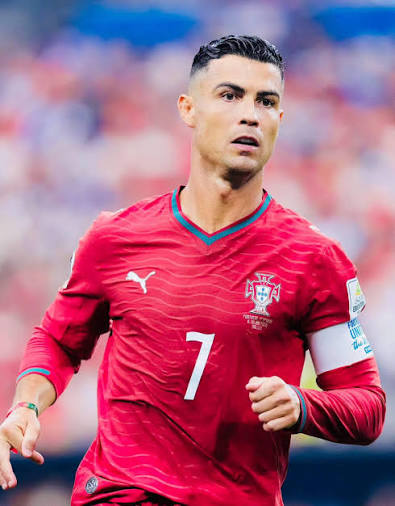
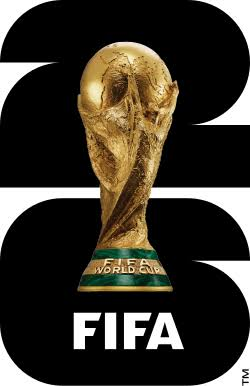

Bóng đá

| FIFA World Cup (Giải vô địch bóng đá thế giới) | UEFA EURO (Giải vô địch bóng đá châu Âu) | Copa America | CAF Africa Cup of Nations (CAN) | AFC Asian Cup | UEFA Champions League (Cúp C1 châu Âu) | Premier League (Ngoại hạng Anh) | La Liga | Serie A | Bundesliga |
|---|

World Cup được coi là giải đấu bóng đá danh giá nhất trên toàn cầu, cũng như sự kiện thể thao và văn hóa được xem và theo dõi rộng rãi nhất trên thế giới.
Giải đấu bắt đầu với vòng loại do các liên đoàn khu vực tổ chức, diễn ra trong ba năm trước đó để xác định những đội nào đủ điều kiện tham dự vòng đấu chính.
Ở vòng đấu chính, 48 đội (tính đến World Cup 2026) tranh tài tại các địa điểm trong nước chủ nhà trong khoảng một tháng, ban đầu theo bảng và sau đó là các vòng đấu loại trực tiếp culminating trong trận chung kết để xác định nhà vô địch.
Nước chủ nhà tự động đủ điều kiện vào vòng bảng của giải đấu.
Mười chín quốc gia đã từng đăng cai sự kiện này, đôi khi đồng đăng cai với các quốc gia khác.
Một số trang web về bóng đá: